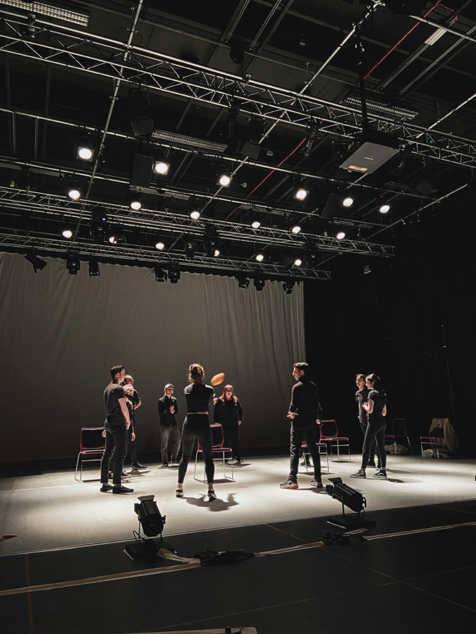
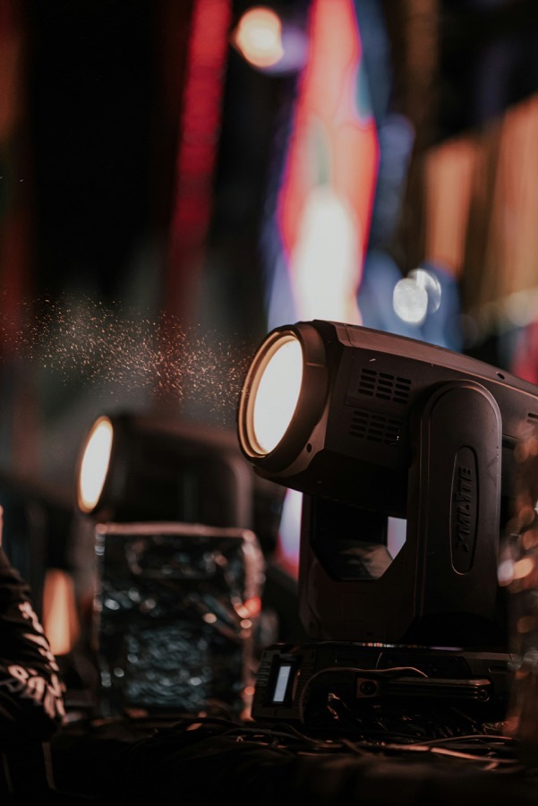

Artes escénicas
Profesionalizar las especialidades técnicas con formación práctica, certificable y con la seguridad como base de cada montaje.
CHECOTEC es el organismo de capacitación de Espacio Checoeslovaquia, en San Joaquín. Formamos a quienes hacen posible cada función.
Ver nuestros cursosCHECOTEC es el organismo técnico de capacitación (OTEC) de Espacio Checoeslovaquia. Fue creado para formar con estándares formales y práctica real en un escenario a las personas que iluminan, montan, sonorizan, suspenden y operan cada producción.
Su propósito es contribuir al desarrollo y la profesionalización de las artes escénicas, y poner la seguridad como base de cada montaje.
Espacio Checoeslovaquia es una fábrica creativa en San Joaquín, con más de diez años de historia acogiendo residencias, ensayos y funciones. Es un lugar donde el arte se piensa como una experiencia de transformación social, y donde las especialidades técnicas se aprenden, sobre todo, haciendo.
CHECOTEC nace de ahí: de la misma sala donde se trabaja cada día, para dar a esas especialidades la formación y el reconocimiento que merecen.
Nuestro primer foco son las artes escénicas y el barrio que nos vio nacer. Desde ahí, creemos que lo que aprendemos puede servir también a otras personas y organizaciones.
Profesionalizar las especialidades técnicas con formación práctica, certificable y con la seguridad como base de cada montaje.
Hacer de San Joaquín un lugar donde también se aprende una especialidad técnica, con una formación cercana y ligada a la comunidad que el Espacio construye hace más de una década.
Abrir nuestra formación a un público más amplio, con cursos online y nuevas áreas, para quienes quieran aprender con el mismo espíritu práctico.
Empezamos por las especialidades técnicas de las artes escénicas y vamos sumando nuevas alternativas.

Inscripciones abiertas · Inicio 19 de octubreMonta, opera y desmonta la caja escénica con seguridad. Tramoyería, rigging y operación de maquinaria, con más de la mitad del curso en práctica sobre un escenario real.

PróximamenteDiseño y operación de iluminación para teatro, música en vivo y eventos.
PróximamenteAprende a crear y publicar tu propio sitio web apoyándote en inteligencia artificial.
PróximamenteIzaje y maniobras de carga en montajes escénicos y eventos, con la seguridad como base.
PróximamenteCertificación de calidad vigente emitida por Confidence Certification — el estándar que exige SENCE para organismos de capacitación.
Organismo Técnico de Capacitación inscrito en el Registro Nacional SENCE (RUT 78.395.323-4). Los cursos aprobados permiten usar franquicia tributaria para empresas e instituciones.
Infraestructura técnica real en San Joaquín, Santiago — no una sala de reuniones, sino un espacio escénico de trabajo.